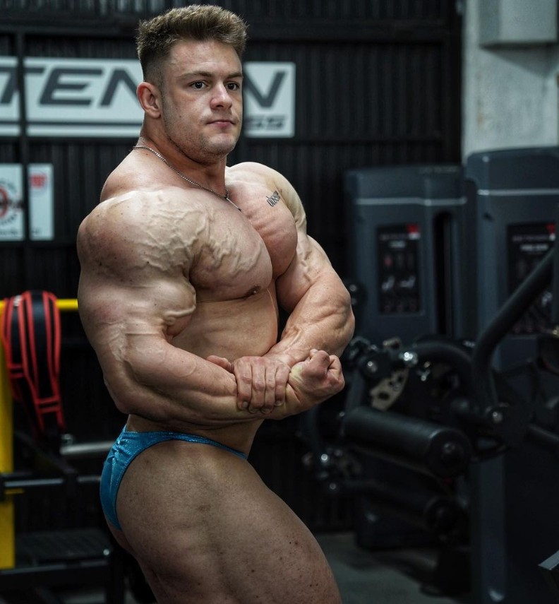

Chris Bumstead

Joan Pradells

Lean Beef

Kai Greene
Breve Historia
El Fisicoculturismo tuvo sus orígenes en Grecia, en donde el cuerpo humano tenía una gran relevancia cultural. Se utilizaban pesos de manos para la realización de ejercicios y saltos, para aumentar la fuerza y longitud del salto.
Esta disciplina se hizo más popular en los años 1950 y 1960, con la incorporación de aparatos de gimnasio más sofisticados.
Mención especial merece la "edad de oro del culturismo" entre las décadas de 1940 y 1970, con una nueva visión más comercial de este deporte y la creación de concursos, siendo el más conocido el "Mr. Olympia".
Posteriormente, esta etapa tuvo un declive en las décadas de 1980 y 1990, continuando con las competiciones de culturismo, en las cuales se da una mayor relevancia al volumen. Se continuaron desarrollando investigaciones en el mundo de la nutrición, suplementación y entrenamiento para el desarrollo de esta actividad física.
Esta disciplina se hizo más popular en los años 1950 y 1960, con la incorporación de aparatos de gimnasio más sofisticados.
Mención especial merece la "edad de oro del culturismo" entre las décadas de 1940 y 1970, con una nueva visión más comercial de este deporte y la creación de concursos, siendo el más conocido el "Mr. Olympia".
Posteriormente, esta etapa tuvo un declive en las décadas de 1980 y 1990, continuando con las competiciones de culturismo, en las cuales se da una mayor relevancia al volumen. Se continuaron desarrollando investigaciones en el mundo de la nutrición, suplementación y entrenamiento para el desarrollo de esta actividad física.
Tipo de rutinas
Ejercicios
Algo mas que todavía no se